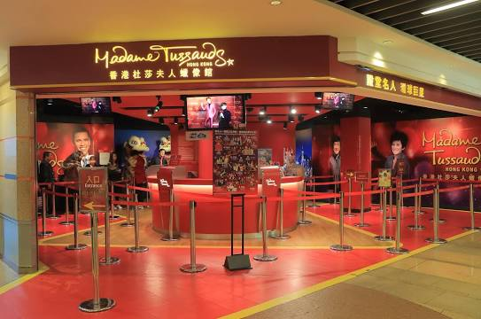

|  |
Madame Tussauds Hong Kong, is part of the renowned chain of wax museums founded by Marie Tussaud of France,
is located at the Peak Tower on Hong Kong Island in Hong Kong. It is the first Madame Tussauds museums in Asia,
the other being the Shanghai branch, which opened in 2006 and the third branch at Bangkok which opened in 2010.
The Hong Kong branch houses nearly 100 wax figures of internationally known personalities, with Asian figures
taking up more than a third of the total, of which sixteen were Hong Kongers.[2][3] The wax figures are featured
in a range of themed settings such as Hong Kong Glamour, Music Icons, Historical and National Heroes, The Champions
and World Premiere.
(Source:https://en.wikipedia.org/wiki/Madame_Tussauds_Hong_Kong) |